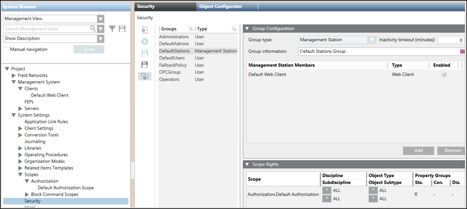
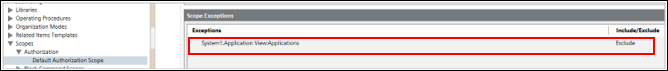
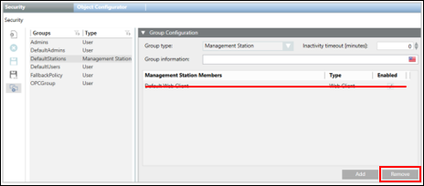
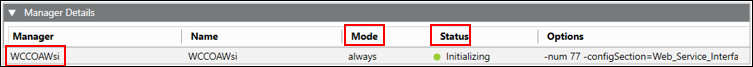
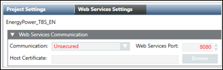
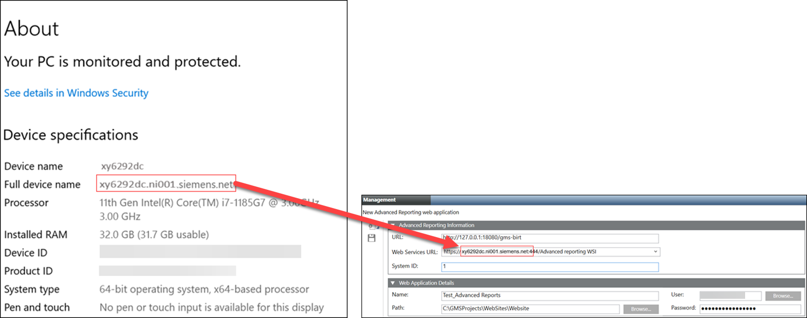

No Access to View Reports
Problem: The message No access to view this report displays when executing a report.
Cause 1: When you run an Advanced Report in the Application Viewer you are actually running it under the Default Web Client with its assigned scope and application rights. This applies also to the Advanced Reporting - Configuration Page. In the case of the HQ TBS, BA and FS project templates the Default Web Client is associated with the DefaultStations security group. This Management Station security group uses the Default Authorization Scope and reduced application rights to restrict the rights when accessing the project with a Web Client. In the case of HQ TBS, BA and FS project templates, the Application View , for example, is excluded. This is why the system denies the Default Web Client access to the Application View.


Solution 1: Remove the Default Web Client from the DefaultStations security group.

Cause 2: Status of the Web Services (WSI) service in the Manager Details expander of the project in SMC is Initializing.

Solution 2: In case there are several running projects on the same server (SMC), verify that each project has a unique Web Service port number.

Cause 3: Status of the Web Services (WSI) service in the Manager Details expander of the project in SMC is Stopped (and possibly Mode = manual).
Solution 3: Open WinCC OA Console and fix the issue.
Cause 4: When you create a new Advanced Reporting web application, you select a Web Services URL from the drop-down list by navigating to SMC tree > Website > Create Web Application
 > New Advanced Reporting web application > Advanced Reporting Information expander.
> New Advanced Reporting web application > Advanced Reporting Information expander.
In this Web Services URL, if the domain name has Underscore character (_), then on the execution of Pharma and Trend Calculation reports and settings, an error message NO access to view this report is displayed.
Solution 4: In the Web Services URL, Underscore character (_) is not supported in the domain name.
The domain name used in the Web Services URL is the Full Device Name of your computer mentioned in the Windows Start menu, right-click Computer, and select Properties > About. For more information about Full Device Name, see topic Verify the Full Computer Name of the System in Server Projects Configuration Procedures.
In case you need to change the domain name, you must contact your company IT support.
